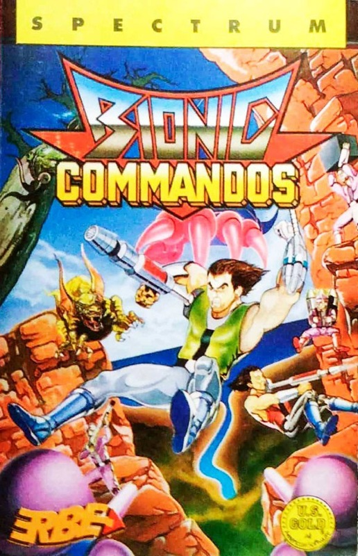
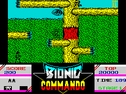

Bionic Commandos


{kind=link}

| Publisher: | GO! |
| Price: | £8.99 / £12.99 |
| Year: | 1988 |
| Source: | CRASH, Issue 53 |

Fresh from the arcades, our bionic commando is all set to make history on the Spectrum. Complete with his superhuman grappling arm, he must negotiate dangerous enemy territory in order to infiltrate the opposition’s base and deactivate its missiles.
The mission takes place over five levels of four-way scrolling terrain. Each stage is timed and must be completed within 200 units. The environment, which ranges from the jungle, via a fort, a complex of pipes and control tower, to the missile centre itself, consists of a network of platforms patrolled by a host of vigilant enemy soldiers. The player parachutes into the forest and attempts to make his way up, along and across these platforms using his bionic arm — a telescopic extension with a grappling hook at the end. This clips on to nearby branches and enables the intrepid commando to swing gracefully from tree to tree.

Enemy soldiers can be struck with the all-purpose bionic arm or shot using a gun. Extra equipment (firepower or faster arm movement) is airlifted in and can be collected by shooting or grappling down the parachute from which it is suspended. Should he get shot before he has a chance to retaliate, or fall into a bottomless pit, the commando loses one of his four bionic lives.
Each level has its own particular hazards: killer bees and deadly plants in the jungle, missile-belching cannons in the fort, nasty green gremlins chewing away at the pipework and bomb-dropping helicopters in the control tower. A series of huge foot-stamping robots bars the way into the final level of confrontation.
A status strip at the base of the screen shows score, weapon presently being used, number of lives left, high score, current level and time remaining.
CRITICISM
“At last, Bionic Commando on the Spectrum! Yes that’s right ladies and gents, those kind people at GO! have converted one of the best arcade games around onto your computer — and it’s not that bad either! The graphics are excellently drawn, especially on higher levels where you have to dive under massive fists and dodge giant feet. Amazingly the characters don’t merge with the background to produce a blind blur: you can actually see them! Each stage has something more to offer in the shape of extra things to do and tougher enemies to beat, and each one Is as addictive as the last. The 128K music is just fantastic with different tunes crop- ping up all the time. This sets the mood for the game well, and for a change you don’t have to load more stages as you progress. On the 48K however, there are just sound effects and the usual frustrating multiload system that most games seem to have these days. Bionic Commando is a thoroughly enjoyable game, miss it and you’re mad!”
NICK ... 92%
“Bionic Commando is essentially a combination of platform game and shoot ’em up with a little exploration thrown in for good measure. What turns this mish-mash of ingredients into a glowing success Is the concept of the bionic arm. Hurling your hook through the air and swinging with athletic poise from branch to branch is exhilarating, unusual and, above all, fun. Giant robots, killer bees, parachutes, choppers and fatal weeds ensure plenty of variety as you rush madly towards deactivation of the secret missile base. Each of the five timed levels is extremely challenging and designed to keep you going back for more. My only quibble regards the jerky scrolling; you can’t always see ahead quite as far as you need to but in some ways this manages to contribute to the tension. Graphically, Bionic Commando is hardly spectacular but what it lacks in colour, it more than makes up for with its psychedelic 128K tune — it’s different for every level and the best music I’ve ever heard on the Spectrum. Even without this extra bonus you have a highly addictive and playable game; try it and you’ll buy it.”
KATI ... 91%
“When I heard that GO! were going to transfer the massive arcade might of the Bionic Commando coin-op on to the Spectrum I laughed. But knock me over with a feather, those chaps at Software Creations (Bubble Bobble) have done a grand job. So it’s no longer a two player game, who cares? Smart move on GO!’s part because EVERYONE will be wanting to get their hand on their new game. The best part of Bionic Commando has got to be the mechanical arm. Not only does it help you to reach out and avoid most confrontations, it also contains deadly fire power. Some may say the scrolling’s a bit jerky, but that’s only because it’s terrifically fast — thus keeping the action coming at break-neck speed. With so much content you can’t afford to miss GO!’s greatest game yet!”
PAUL ... 92%
COMMENTS
| Joysticks: | Cursor, Sinclair, Kempston |
| Graphics: | Clever mix of colour and detail. Lots of variation |
| Sound: | Fantastic 128K throughout game. Atmospheric sound FX on 48K |
| Options: | Definable keys |
| General rating: | The first successful conversion from the new GO!/Capcom deal. Let’s hope it continues! |
| Presentation: | 84% |
| Graphics: | 88% |
| Playability: | 93% |
| Addictive qualities: | 92% |
| Overall: | 92% |